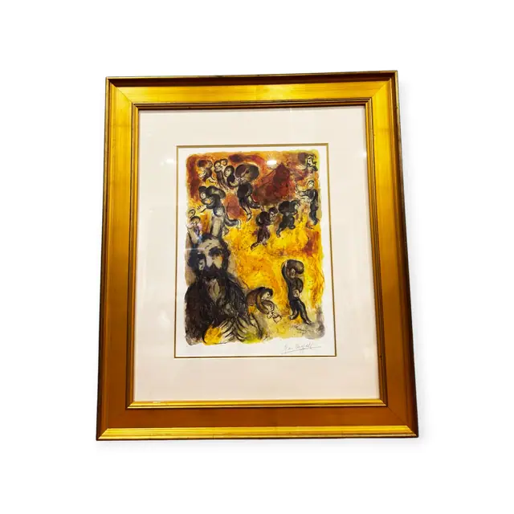
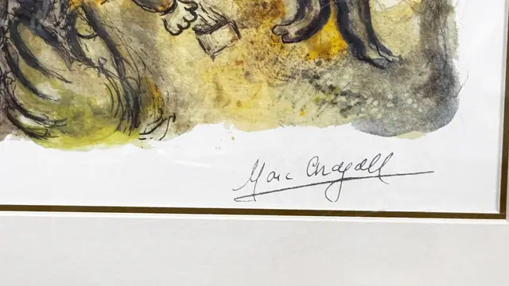
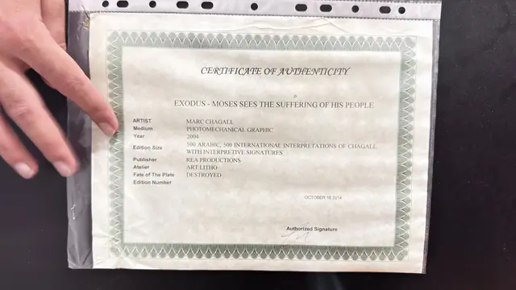
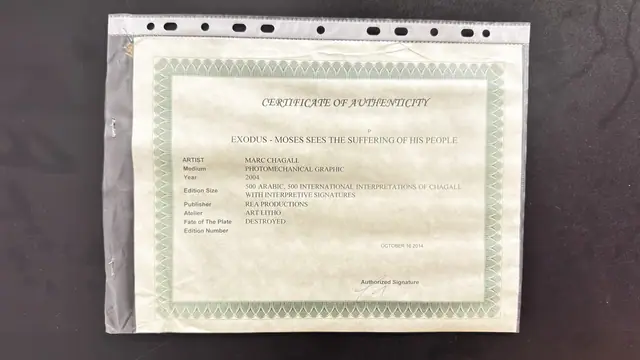

Paintings & Prints
Chagall Exodus Moses Sees His People Suffer, MARC CHAGALL, Signed in the Plate, Framed, 2014
MARC CHAGALL · published 2004, certified 2014
Price Upon Request




About the Item
MARC CHAGALL. A crowded biblical scene rendered in washy, luminous colour: the bearded head of Moses looms at the lower left in blue-black, while above and to the right a press of small figures in brown, indigo and violet climbs across a field of hot cadmium yellow and rust red. The drawing is loose and brushy with pooled watercolour-like edges, printed on heavy cream paper with full margins. It is presented on a wide cream mat with a gold fillet, in a broad water-gilt frame under glass. Medium: photomechanical colour graphic (offset lithograph) on paper. Signed lower right of the sheet, reading "Marc Chagall". Edition: 500 ARABIC, 500 INTERNATIONAL INTERPRETATIONS OF CHAGALL WITH INTERPRETIVE SIGNATURES; Edition Number left blank. Accompanied by a certificate: Certificate of Authenticity for 'EXODUS - MOSES SEES THE SUFFERING OF HIS PEOPLE'; Artist: MARC CHAGALL; Medium: PHOTOMECHANICAL GRAPHIC; Year: 2004; Edition Size: 500 ARABIC, 500 INTERNATIONAL INTERPRETATIONS OF CHAGALL WITH INTERPRETIVE SIGNATURES; Publisher: REA PRODUCTIONS; Atelier: ART LITHO; Fate of The Plate: DESTROYED; Edition Number: (blank); dated OCTOBER 16 2014. Inscribed on the reverse or mount: Marc Chagall (signed lower right of the sheet). Condition: Certificate housed in a punched plastic sleeve, lightly creased. Print clean with bright colour; some glass glare.
Details
- Creator:
- MARC CHAGALL
- Creation Year:
- published 2004, certified 2014
- Dimensions:
- Height: 36.4 in (92.46 cm)
Width: 30.8 in (78.23 cm)
outside of frame - Medium:
- photomechanical colour graphic (offset lithograph) on paper
- Edition:
- 500 ARABIC, 500 INTERNATIONAL INTERPRETATIONS OF CHAGALL WITH INTERPRETIVE SIGNATURES; Edition Number left blank
- Period:
- 21St
- Condition:
- Offered in the condition shown in the photographs.
- Reference Number:
- VO-266
- Documentation:
- Certificate of Authenticity for 'EXODUS - MOSES SEES THE SUFFERING OF HIS PEOPLE'; Artist: MARC CHAGALL; Medium: PHOTOMECHANICAL GRAPHIC; Year: 2004; Edition Size: 500 ARABIC, 500 INTERNATIONAL INTERPRETATIONS OF CHAGALL WITH INTERPRETIVE SIGNATURES; Publisher: REA PRODUCTIONS; Atelier: ART LITHO; Fate of The Plate: DESTROYED; Edition Number: (blank); dated OCTOBER 16 2014.
- Gallery Location:
- Marc Chagall (signed lower right of the sheet)